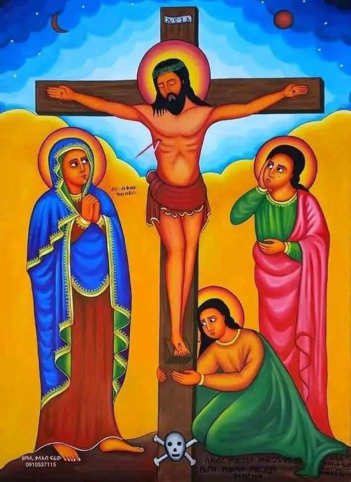
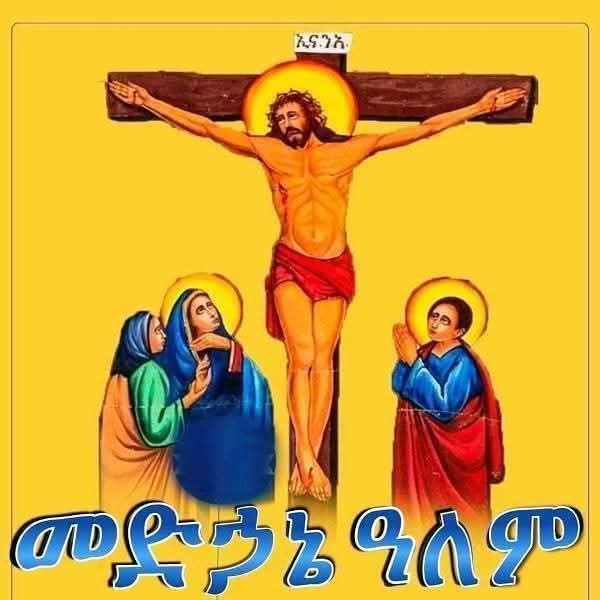

Budapest parish under the Germany and surrounding areas diocese
በኢትዮጵያ ኦርቶዶክስ ተዋህዶ ቤተክርስቲያን በጀርመንና አካባቢው ሀገረ ስብከት የቡዳፔስት መድኃኔዓለም ቤተክርስቲያን
Ethiopian Orthodox Tewahido Church Under Germany and Surounding Areas Dioces Budapest Medahanealem Church
Az Etióp Ortodox Tewahedo Egyház Németországi és Környező Területek Egyházmegyéje - Budapesti Medhane Alem Templom
A professional public-facing church website presenting the identity, worship life, community mission, and parish address of the Budapest Medhane Alem Church.

Official Church Website
Budapest Medhane Alem
Parish address
Tbiliszi tér, Budapest, 1087
Ecclesiastical affiliation
Under Germany and Surrounding Areas Diocese
Public website purpose
Representation, information, verification
About the parish
A church home rooted in prayer, sacramental life, and service
The Budapest Medhane Alem Church serves Ethiopian Orthodox faithful and all visitors seeking worship, spiritual guidance, and community life in Budapest. The site is designed to present the church clearly and professionally for public reference and institutional verification.
Inspired by established Ethiopian Orthodox church presentation standards, this website brings together ecclesiastical identity, multilingual naming, church life, location details, and a dignified visual character appropriate for an official parish presence.
Regular prayer, divine liturgy, feast observances, and sacramental ministry.
Guidance for families, children, youth, and the wider community.
Official church naming and Budapest address displayed in a structured form.

Official identity
Clear church presentation for public and administrative reference
በኢትዮጵያ ኦርቶዶክስ ተዋህዶ ቤተክርስቲያን በጀርመንና አካባቢው ሀገረ ስብከት የቡዳፔስት መድኃኔዓለም ቤተክርስቲያን
Ethiopian Orthodox Tewahido Church Under Germany and Surounding Areas Dioces Budapest Medahanealem Church
Az Etióp Ortodox Tewahedo Egyház Németországi és Környező Területek Egyházmegyéje - Budapesti Medhane Alem Templom
Verification note
Official address and public identity are presented consistently on this website.
This section is intended to make the church easy to identify for visitors, institutions, and verification processes requiring the official church name, physical address, and public presence in Budapest.
Worship life
Prayer, liturgy, feast observance, and fellowship
Sunday Divine Liturgy
The parish gathers for worship centered on prayer, sacred readings, liturgical chant, and the life-giving tradition of the Ethiopian Orthodox Tewahido Church.
Feast Day Observances
Major feasts and commemorations are observed with reverence, bringing the faithful together in prayer and celebration throughout the year.
Children and Community
The church supports spiritual formation, intergenerational belonging, and a stable community environment for families and youth.
Pastoral Guidance
Members of the parish can seek spiritual support, guidance, and community connection through the ministry of the church.
Prayer board
Admin-managed prayer schedule and announcements
Prayer items published by the church administrator appear here with their scheduled time and can be shared across social media platforms.
No prayers have been published yet.
Church events
Upcoming events published by the administrator
The church administrator can publish event time, date, location, supporting documents, and other details here.
No events have been published yet.
Sacraments and ministries
Core areas of church service reflected from the reference structure
Baptism
Welcoming the faithful into the sacramental life of the church through holy baptism.
Spiritual Guidance
Prayer, counsel, and instruction that strengthen Christian life and discipleship.
Holy Matrimony
Marriage honored as a sacred covenant within the life and teaching of the church.
Holy Communion
The central mystery of communion within the worship life of the faithful community.
Memorial Prayer
Prayerful remembrance for the departed and support for families in times of loss.
Church image gallery
A visual presentation of faith, dignity, and parish identity
No gallery media uploaded yet.
Contact and location
Budapest Medhane Alem Church
Inquiry form
Website inquiry and verification request
Send your message directly to church administration using this form.